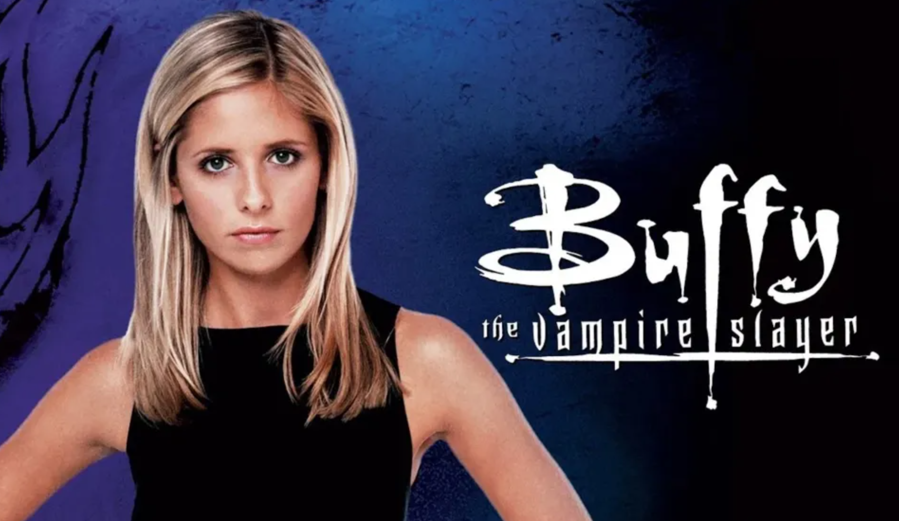

Buffy the Vampire Slayeris a Joss Whedon made American television drama series that was groundbreaking for its time. It defied classic horror tropes of the blonde girl always being the helpless person that was either killed first or left to deal with the aftermath. The title character Buffy Summers was designed after this stereotype physically and set-up to act the opposite while still being a "stereotypical blonde girl" at heart.
Buffy is exactly what the title of the show suggests, a vampire slayer. She was chosen to kill vampires and demons that terrorize the mortal world and keep them in check. What makes Buffy such an interesting character though, is she does not really want to be "The Slayer," which is only picked once the previous slayer dies, always passing on to a girl. Buffy first gets her slayer abilities in the film also titled Buffy the Vampire Slayer, but her real start with a mainstream audience is in the television show that aired in 1997. At this point Buffy's actor had also changed from Kristy Swanson to Sarah Michelle Gellar.
Even though Buffy may not desire to have her powers that come with being "The Slayer," she still takes on the role and manages to keep the supernatural bad guys at bay, eventually. She is someone to look up to though as she time and time again makes mistakes and expresses her feelings about it to the people around her. She shows the audience that it's okay to fail if only to get right back up afterwards, or to show the consequences of ones actions from the smallest mistakes to the biggest disasters. The show itself outlines true friendship and acceptance of one another even with your flaws, along with the concept of depression, and death and changing the future as well as the concept of having a soul and love. All of these messages have lead to a transformation of how drama television is written and has even lead to trends and updates in dictionaries.
